library(tidyverse) # includes forcats
library(patchwork)
library(conflicted)
conflicts_prefer(dplyr::filter)24 Factors
Audit data is full of categories. Expenditure is booked under heads from an approved list. Payments are made in districts, by offices, to types of vendors. Works are graded by quality inspectors as Poor, Average or Good. Units are rated as Low, Medium or High risk. Bills are grouped by how long they took to pay.
Such categories cause three kinds of trouble. First, a value may be typed wrongly, or may not be in the approved list at all. A head called Hospitality in a list that has no such head needs an explanation. Second, many categories have a natural order that is not alphabetical. Sorted as text, High risk comes before Low, and April comes after August. Third, charts drawn from categories come out in alphabetical order, with too many bars, which hides the point we want to make.
R has a special class for such data, called factor. A factor stores a category, along with the fixed list of values it may take, called its levels, in an order that we choose. We met this data type briefly in Section 1.5.1. In this chapter we learn it in detail. We create factors in base R, and then use the forcats package to check, order, rename and lump their levels. All along we use audit data. At the end, from Section 24.6, we use factors to catch unapproved heads, filter units by risk and draw a clean chart of the top vendors.
Prerequisites
24.1 Factors in base R
Factors in R are built on the integer data type. Base R has two main functions to create factors from character vectors.
Of these, factor() gives full control, as it is the basic function to create factors in base R. Let us discuss both.
24.1.1 Creating factors from scratch
The quality control wing of a Public Works Department inspects completed works. It grades each work on a five-point scale, with the codes P, A, G, VG and E. These stand for Poor, Average, Good, Very good and Excellent. Let us keep the allowed codes, in their proper order, in a vector.
grade_codes <- c("P", "A", "G", "VG", "E")Now let us say the grades of 10 works were typed in from inspection reports.
[1] G <NA> A VG <NA> G P P A A
Levels: P A G VG EIn the output above, R has put NA silently in place of the values that are not in the allowed codes (the levels). The works graded g and EX have lost their grades without any warning.
Now check its type and class.
The factor class is built on the integer type. Underneath, each value is stored as a number, the position of its level. What we see in the output are the labels, which are the levels by default.
unclass(grade_f) [1] 3 NA 2 4 NA 3 1 1 2 2
attr(,"levels")
[1] "P" "A" "G" "VG" "E" We can show meaningful labels without changing the levels, by giving a vector to the labels argument. Let us create the grades of 100 works, and label them in full.
[1] Good Good Average Average Good Excellent
Levels: Poor Average Good Very good Excellent# Check its levels
levels(grades2_f)[1] "Poor" "Average" "Good" "Very good" "Excellent"The function summary() gives the count of each level of a factor.
summary(grades2_f) Poor Average Good Very good Excellent
21 20 23 17 19 24.1.2 Coercing objects to factor
So far, we created a factor from a set of allowed values (the levels), and showed them with meaningful labels. The function is.factor() checks whether a vector is a factor. The function as.factor() converts a character vector to a factor. It uses all the distinct values in the vector as levels, but sorts them alphabetically.
is.factor(grades2)[1] FALSEis.factor(grades2_f)[1] TRUE[1] G G A A G E
Levels: A E G P VGlevels(grades2_coerced)[1] "A" "E" "G" "P" "VG"# Check summary too
summary(grades2_coerced) A E G P VG
20 19 23 21 17 The levels are now in alphabetical order, A, E, G, P, VG. That order means nothing. Excellent sits between Average and Good. Our factor created from scratch did not have this problem. There we gave the levels ourselves, in a meaningful order.
24.1.3 Order in factors
Even with the levels in the right order, R does not know that Good is better than Average. To tell it, we create an ordered factor. An ordered factor can be created in two ways.
- Use the argument
ordered = TRUEin the functionfactor(). - Convert an existing factor to an ordered factor, with the function
ordered().
The second way orders the levels as they already are in the factor.
[1] Good Good Average Average Good Excellent
Levels: Poor < Average < Good < Very good < ExcellentThe levels are now printed with < between them. An ordered factor has another benefit. We can compare its values. Suppose we want to know how many works were graded Good or better.
# How many works are graded Good or better?
sum(grades2_ordered >= "Good")[1] 59# But an unordered factor gives only a warning, and NA
sum(grades2_f >= "Good")Warning in Ops.factor(grades2_f, "Good"): '>=' not meaningful for factors[1] NA
WarningCaution
Notice that the unordered factor did not stop with an error. It gave a warning, and the answer NA. In a long script, such a warning is easily missed, and the NA silently flows into later results. So always read the warnings, and use ordered factors wherever the order matters.
We can check whether a factor is ordered with the function is.ordered().
24.1.4 Functions returning factors as output
In Section 4.12.9 we learnt the function cut(), which divides numbers into categories and returns a factor. In the next sections we learn more functions that work with factors, as input, as output or both.
24.2 Factors in forcats
The package forcats, part of the core tidyverse, gives safer and more useful ways to create and handle factors. In forcats we have the function fct() to create a factor. It stops with an error if any value is not in the given levels. This catches typing errors that factor() would hide. For example, here a month in a return has been typed wrongly.
24.3 Inspecting factors
24.3.1 Summarising factors
The summary() method gives the count of each level.
Like count() in dplyr, forcats has fct_count(), which gives the count of each level, and optionally the proportions. The difference from summary() is in the type of output. fct_count() returns a tibble.
fct_count(grades2_fct)# A tibble: 5 × 2
f n
<fct> <int>
1 G 23
2 A 20
3 E 19
4 VG 17
5 P 21# Sort in decreasing counts
fct_count(grades2_fct, sort = TRUE)# A tibble: 5 × 2
f n
<fct> <int>
1 G 23
2 P 21
3 A 20
4 E 19
5 VG 17# Include proportions also
fct_count(grades2_fct, sort = TRUE, prop = TRUE)# A tibble: 5 × 3
f n p
<fct> <int> <dbl>
1 G 23 0.23
2 P 21 0.21
3 A 20 0.2
4 E 19 0.19
5 VG 17 0.1724.3.2 Unique levels only
The function fct_unique() returns a factor with the unique values, removing duplicates.
fct_unique(grades2_fct)[1] G A E VG P
Levels: G A E VG P24.4 Order in factors
24.4.1 Default ordering in factors
A factor created with fct() has its levels in the order given in the levels argument. If that argument is not given, the levels are in the order of first appearance. This is different from factor(), which sorts them alphabetically. We saw this in the output above, where G came first because the first work in the data was graded G.
To learn more functions of forcats, we now use a larger dataset. A state health mission has given us its bills for the financial year 2024-25. There are bills from 18 districts, under five heads. Each bill has a month, an amount, and the number of days taken to pay it. The mission’s report groups the bills by delay, with Not paid listed first. We have planted two features in the data. The bills of one district are much larger than the rest. Equipment bills rush up in February and March.
Code to create the bills of the health mission
set.seed(2024)
districts <- c("Anandpur", "Badalgarh", "Chandanpur", "Devgarh", "Gopalganj", "Haripur",
"Jaitpur", "Kishangarh", "Lalpur", "Madhopur", "Nayagaon", "Pratapgarh",
"Rampur", "Sitapur", "Sundernagar", "Tilakpur", "Udaypur", "Vijaynagar")
heads <- c("Civil works", "Equipment", "Training", "Office expenses", "Publicity")
fy_months <- seq(as.Date("2024-04-01"), by = "month", length.out = 12)
n <- 4000
bills <- tibble(
bill_no = sprintf("HM/24-25/%05d", 1:n),
district = sample(districts, n, TRUE, prob = runif(18, 0.3, 2)),
head = sample(heads, n, TRUE, prob = c(4, 2, 2, 3, 1)),
month = sample(fy_months, n, TRUE),
amount = round(rlnorm(n, log(60000), 0.8)),
days_to_pay = round(rexp(n, 1 / 25))
)
# Planted. Bills of Haripur are about three times the usual size
bills <- bills |>
mutate(amount = if_else(district == "Haripur", amount * 3, amount))
# Planted. Equipment bills are four times larger in February and March
bills <- bills |>
mutate(amount = if_else(head == "Equipment" & month >= as.Date("2025-02-01"),
amount * 4, amount))
# Some bills are not paid yet
bills$days_to_pay[sample(n, 240)] <- NA
bills <- bills |>
mutate(delay = case_when(is.na(days_to_pay) ~ "Not paid",
days_to_pay <= 30 ~ "Within 30 days",
days_to_pay <= 60 ~ "31 to 60 days",
days_to_pay <= 90 ~ "61 to 90 days",
TRUE ~ "Over 90 days"),
delay = factor(delay, levels = c("Not paid", "Within 30 days", "31 to 60 days",
"61 to 90 days", "Over 90 days")))bills# A tibble: 4,000 × 7
bill_no district head month amount days_to_pay delay
<chr> <chr> <chr> <date> <dbl> <dbl> <fct>
1 HM/24-25/00001 Nayagaon Civil works 2025-02-01 17452 8 With…
2 HM/24-25/00002 Vijaynagar Civil works 2024-04-01 29449 1 With…
3 HM/24-25/00003 Pratapgarh Civil works 2024-09-01 128298 43 31 t…
4 HM/24-25/00004 Nayagaon Publicity 2024-08-01 79501 16 With…
5 HM/24-25/00005 Chandanpur Civil works 2024-06-01 22768 41 31 t…
6 HM/24-25/00006 Jaitpur Training 2024-09-01 98564 2 With…
7 HM/24-25/00007 Gopalganj Equipment 2024-10-01 78764 10 With…
8 HM/24-25/00008 Vijaynagar Office expens… 2025-01-01 213691 40 31 t…
9 HM/24-25/00009 Devgarh Equipment 2025-01-01 110783 38 31 t…
10 HM/24-25/00010 Sundernagar Civil works 2024-08-01 13672 73 61 t…
# ℹ 3,990 more rows24.4.2 Reordering factors
Let us total the bills of each district, in lakh, and draw them as bars.
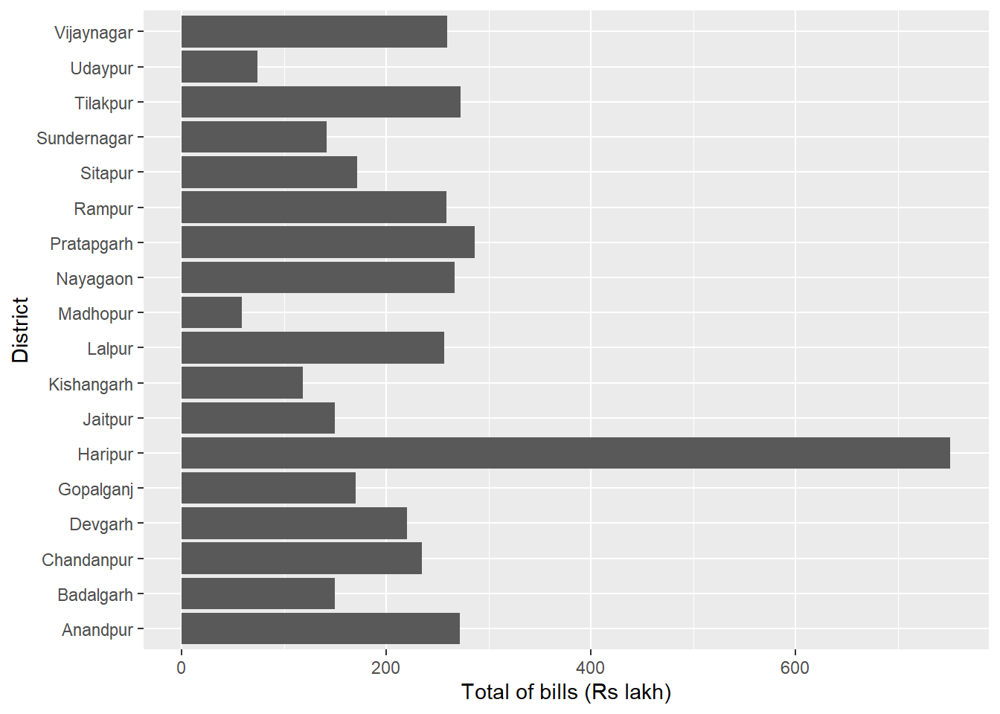
In Figure 24.1 the districts are in alphabetical order. To compare them, we would rather sort the bars by the amount. The function fct_reorder() does this. It orders the levels of a factor by the values of another, numeric, variable.
fct_reorder(
.f,
.x,
.fun = median,
...,
.na_rm = NULL,
.default = Inf,
.desc = FALSE
)The main arguments are these.
-
.fis the factor to be sorted. -
.xis the numeric variable by which.fis sorted. -
.funis the function used when a level of.fhas several values of.x. The default ismedian.
So we can reorder the districts in the chart above with this function. See Figure 24.2.
bills |>
summarise(amount_lakh = sum(amount) / 1e5, .by = district) |>
ggplot(aes(fct_reorder(district, amount_lakh), amount_lakh)) +
geom_col() +
coord_flip() +
labs(x = "District", y = "Total of bills (Rs lakh)")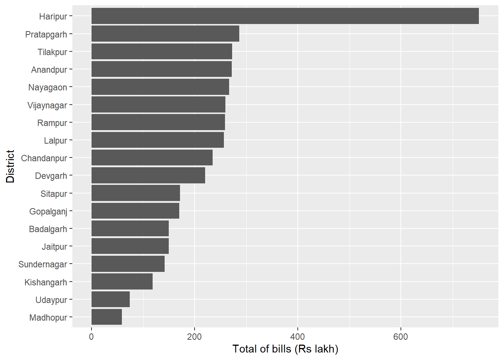
Now the order is clear at a glance. Haripur has the largest total, at ₹7.51 crore. A large total may simply mean many bills, so we also need to look at the size of each bill.
fct_reorder() is also useful in sorting box plots. Let us draw the bill amounts of each district as boxes, first in the default order (Figure 24.3).
bills |>
ggplot(aes(x = amount / 1e5, y = district)) +
geom_boxplot() +
labs(x = "Amount of bill (Rs lakh)", y = NULL) +
ggtitle("Unsorted boxes")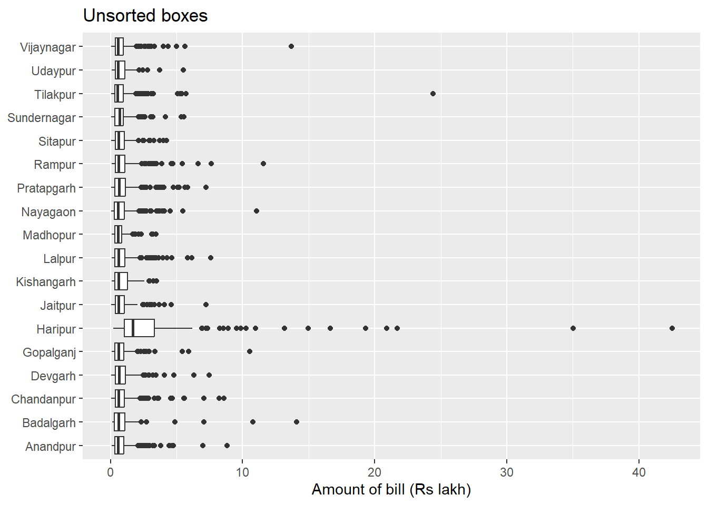
bills |>
mutate(district = fct_reorder(district, amount)) |>
ggplot(aes(x = amount / 1e5, y = district)) +
geom_boxplot() +
labs(x = "Amount of bill (Rs lakh)", y = NULL) +
ggtitle("Boxes sorted on median")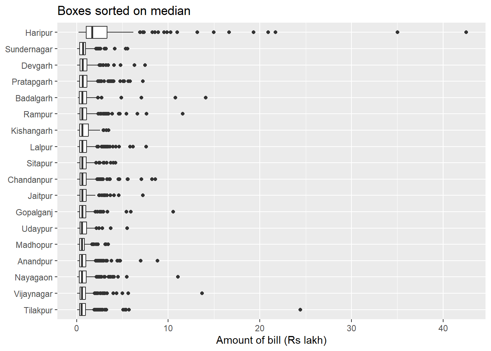
In Figure 24.4 the boxes are sorted by the median bill. One district stands apart at the top. The median bill of Haripur is ₹1.68 lakh, against ₹67,811 for the next district. That is 2.8 times the median bill of all the other districts. The auditor would ask why. Higher rates, bills that combine several jobs, or inflated claims are all possible.
24.4.3 Reordering factors with two other variables
Sometimes a factor needs to be sorted by the last (or first) values of two other variables. A common case is a line chart with one line for each group. The legend is easiest to read when it lists the lines in the same order as their ends on the right. Here fct_reorder2() is useful. Compared with fct_reorder(), it takes an extra argument .y. Its syntax is
fct_reorder2(
.f,
.x,
.y,
.fun = last2,
...,
.na_rm = NULL,
.default = -Inf,
.desc = TRUE
)The default function last2 sorts the levels of .f by the last value of .y, when .y is plotted against .x. Let us draw the monthly total of each head. See Figure 24.5.
monthly_heads <- bills |>
summarise(amount_lakh = sum(amount) / 1e5, .by = c(month, head))
default <- monthly_heads |>
ggplot(aes(month, amount_lakh)) +
geom_line(aes(group = head, color = head)) +
labs(x = NULL, y = "Rs lakh") +
ggtitle("Default legend")
aligned <- monthly_heads |>
mutate(head = fct_reorder2(head, month, amount_lakh)) |>
ggplot(aes(month, amount_lakh)) +
geom_line(aes(group = head, color = head)) +
labs(x = NULL, y = "Rs lakh") +
ggtitle("Legend aligned with \nlast values of each line")
default + aligned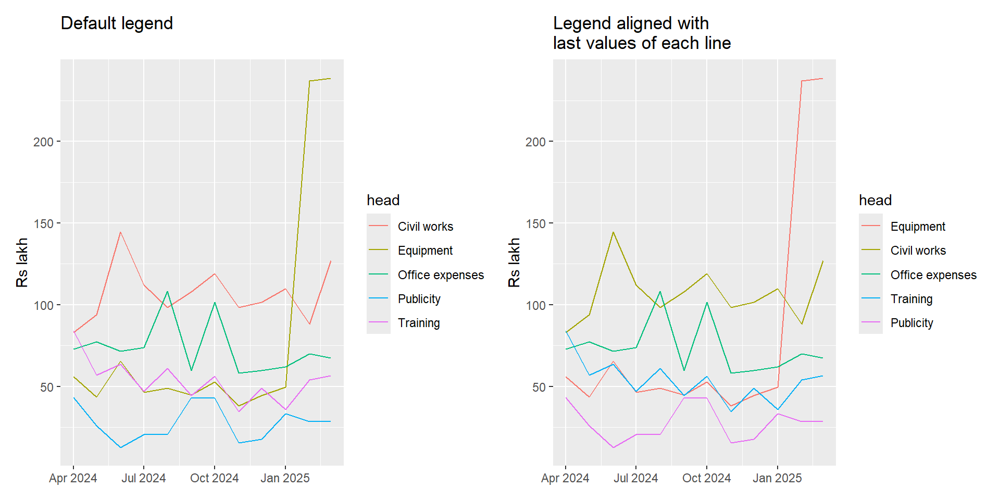
On the right, the legend starts with Equipment, whose line ends highest in March. This is the rush of equipment bills that we planted. Purchases bunched at the end of the year, to use up the budget, are a common audit finding.
24.4.4 Changing the order of a few levels only
Sometimes the levels of a factor are already in a meaningful order. The delay bands of our bills are an example. Look at Figure 24.6.
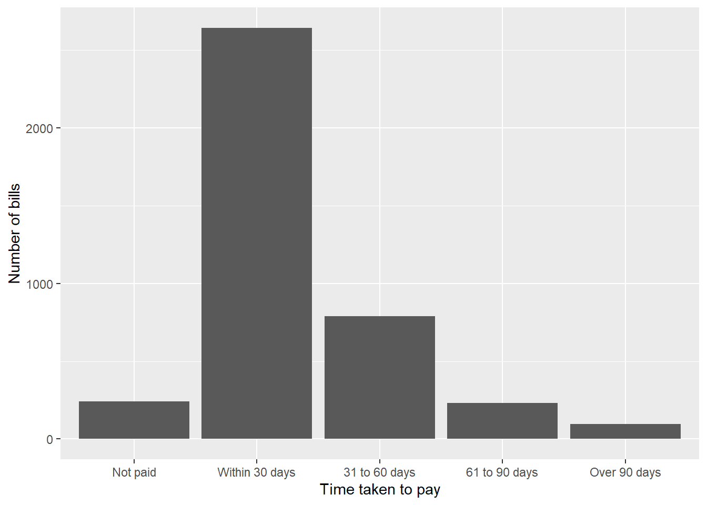
The bands run from the shortest to the longest delay. But Not paid comes first, because the mission’s report listed it first. It would read better at the end, after Over 90 days. In such cases we may use fct_relevel(). It takes a factor, followed by the levels we want to move. By default it moves them to the front. The argument after says where to put them instead. after = Inf moves them to the end. See Figure 24.7.
bills |>
ggplot(aes(fct_relevel(delay, "Not paid", after = Inf))) +
geom_bar() +
labs(x = "Time taken to pay", y = "Number of bills")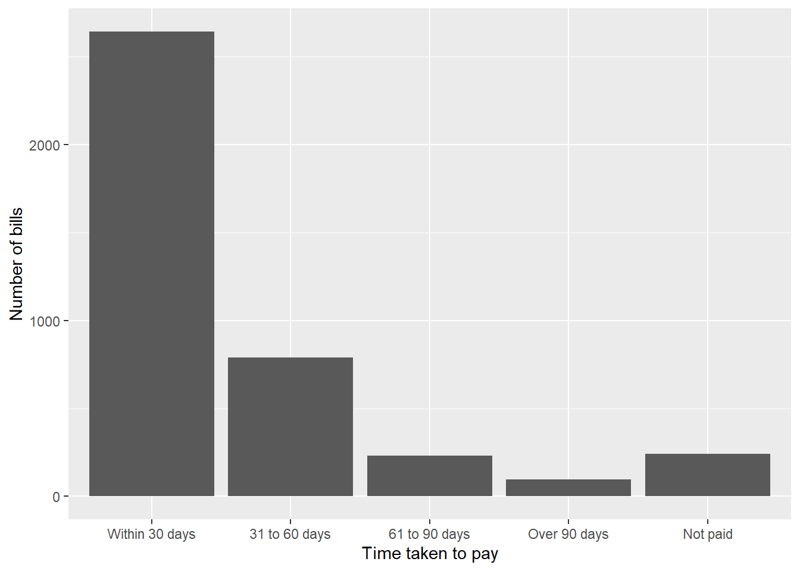
24.4.5 Ordering bar charts in order of frequency
The function fct_infreq() sorts the levels of a factor in decreasing order of frequency. So it can be used to sort bar charts. Let us count the bills under each head (Figure 24.8).
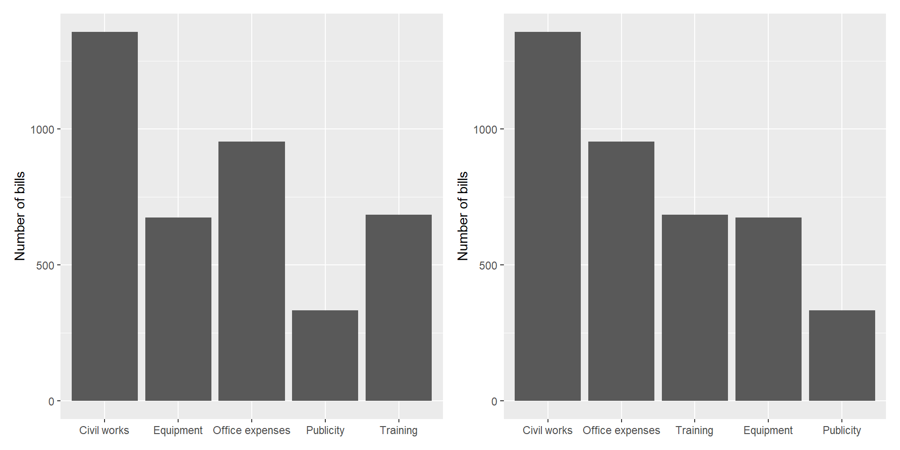
24.4.6 Reversing the factor levels
With fct_rev() we can reverse the order of the levels of any factor. See Figure 24.9.
24.4.7 Other reordering
There are two more functions to reorder the levels of a factor.
-
fct_inorder()orders them by the order in which they first appear. -
fct_inseq()orders them by the numeric value of the level.
Readers may explore these functions by themselves.
24.4.8 More on ordering factors
In Section 24.1.3 we saw how an unordered factor can be turned into an ordered factor. This has a side effect when plotting with ggplot2. An ordered factor gets the viridis colour scale by default, which runs from dark to light. An unordered factor gets a set of distinct colours. Let us colour the bills of each head by their delay band, first as an ordered factor (Figure 24.10), and then as an unordered one (Figure 24.11).
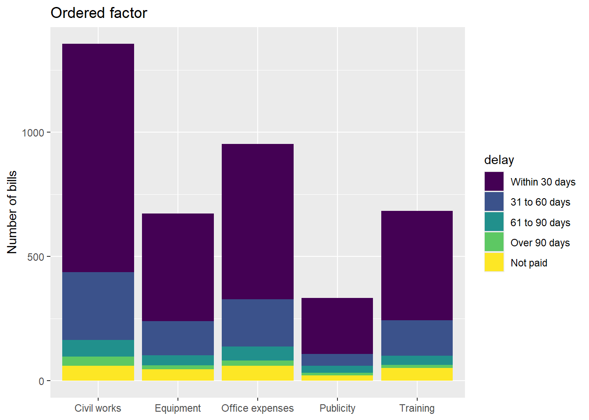
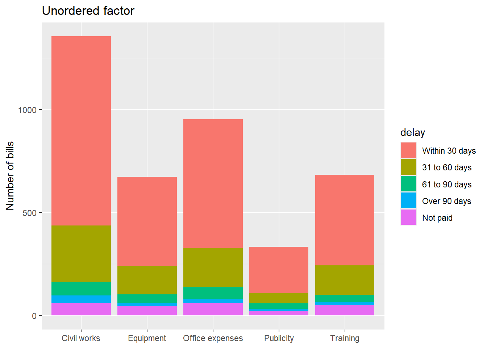
The shades of the ordered factor suit delay bands, since each band is worse than the one before. Distinct colours suit categories with no order, like heads or districts.
24.5 Levels in factors
24.5.1 Modifying factor levels by applying a function
The function fct_relabel() in forcats applies a function .fun to each level of the factor .f given to it. For example, let us change the district names to upper case (Figure 24.12). The order of the levels does not change.
bills |>
mutate(district = fct_relabel(fct_reorder(district, amount), str_to_upper)) |>
ggplot(aes(x = amount / 1e5, y = district)) +
geom_boxplot() +
labs(x = "Amount of bill (Rs lakh)", y = NULL)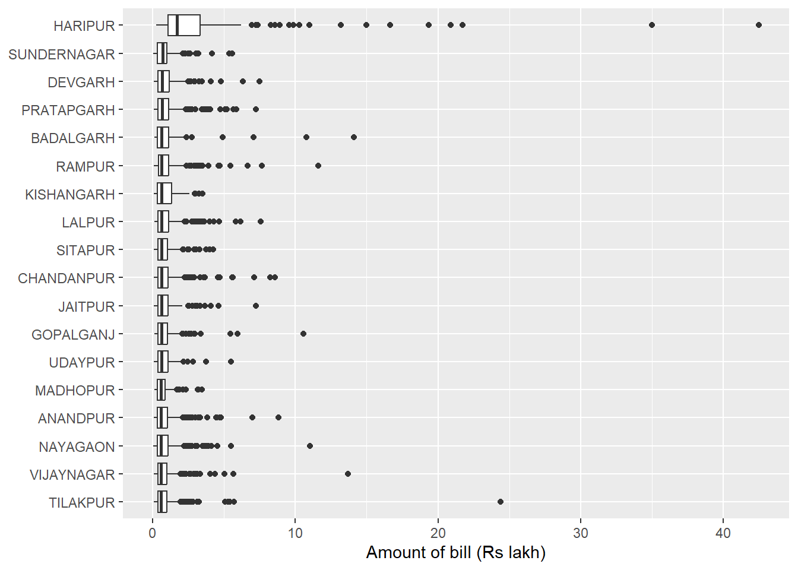
24.5.2 Modifying factor levels manually
With the function fct_recode() we can change the levels of a factor by hand. We give the new levels as a series of named values. The name gives the new level, and the value gives the old level. Levels not mentioned are left as they are. Levels can be removed by naming them NULL.
Say the same head has been entered under two names in a voucher register.
x <- factor(c("Repairs", "Repair & maintenance", "Stationery", "Supplies", "Repairs"))
fct_recode(x, Repairs = "Repair & maintenance")[1] Repairs Repairs Stationery Supplies Repairs
Levels: Repairs Stationery SuppliesTo collapse several levels into one, we can use its cousin fct_collapse(). Here we put Stationery under Supplies, and both spellings of repairs under Repairs.
fct_collapse(x,
Supplies = c("Stationery", "Supplies"),
Repairs = c("Repairs", "Repair & maintenance"))[1] Repairs Repairs Supplies Supplies Repairs
Levels: Repairs Supplies
24.5.3 Lump uncommon factor levels into other
Package forcats has a family of four functions that lump together the levels meeting some condition.
-
fct_lump_min()lumps levels that appear fewer thanmintimes. -
fct_lump_prop()lumps levels that appear in fewer than (or equal to)prop*ntimes. -
fct_lump_n()lumps all levels except thenmost frequent (or least frequent ifn< 0). -
fct_lump_lowfreq()lumps together the least frequent levels, ensuring that"Other"is still the smallest level.
Apart from the factor f, these functions take one or more of these arguments.
-
n. A positivenkeeps thenmost common values. A negativenkeeps the-nleast common values. -
prop. A positiveproplumps values that do not appear at leastpropof the time. A negativeproplumps values that do not appear at most-propof the time. -
min. Keeps levels that appear at leastmintimes. -
w. An optional numeric vector giving weights for the frequency of each value (not level) inf. -
other_level. The name of the level used for the lumped values. The default is"Other". It is always placed at the end of the levels.
Let us see some examples. First, the number of bills of each district.
# Number of bills of each district
bills |>
count(district)# A tibble: 18 × 2
district n
<chr> <int>
1 Anandpur 308
2 Badalgarh 153
3 Chandanpur 238
4 Devgarh 244
5 Gopalganj 191
6 Haripur 252
7 Jaitpur 172
8 Kishangarh 132
9 Lalpur 280
10 Madhopur 77
11 Nayagaon 316
12 Pratapgarh 301
13 Rampur 270
14 Sitapur 210
15 Sundernagar 169
16 Tilakpur 301
17 Udaypur 85
18 Vijaynagar 301# Let us keep the 5 districts with the most bills only
bills |>
ggplot(aes(fct_lump_n(district, n = 5))) +
geom_bar() +
labs(x = NULL, y = "Number of bills")
In Figure 24.13 we see five districts, plus the "Other" level placed last. We may also notice that the bars are not sorted yet.
We may also use the w argument, if we already have our factor and the counts of its levels in another vector. See Figure 24.14.
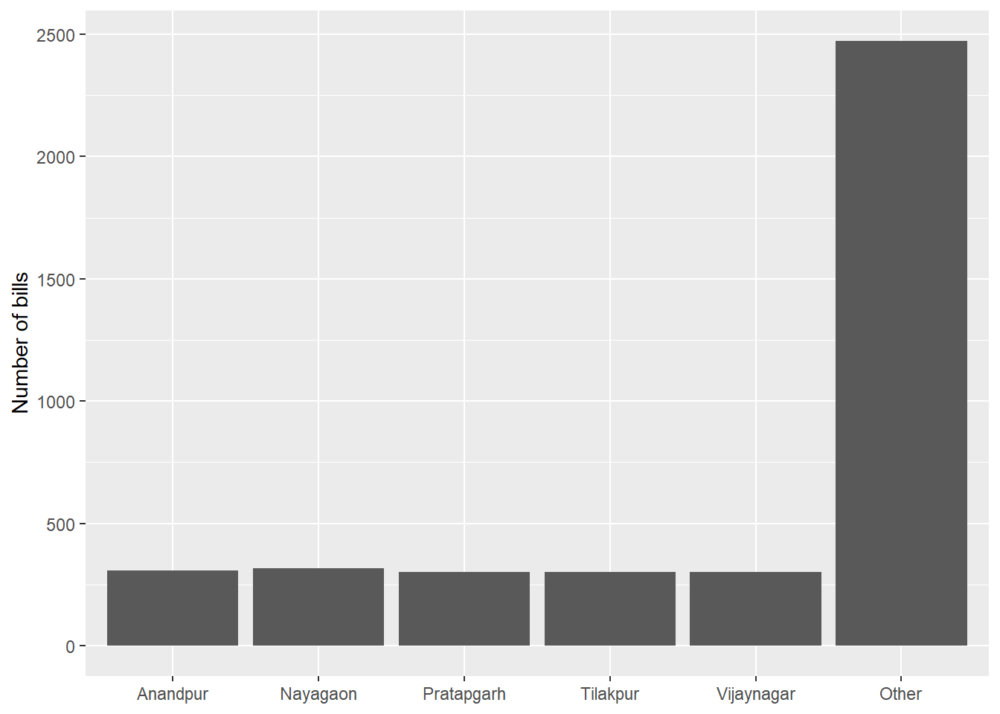
geom_col() draws bars whose heights are already in the data, here the counts n. It is the same as geom_bar(stat = "identity"). To sort the levels in decreasing order of frequency, we can use the function fct_infreq(), which we learnt in Section 24.4.5. It can also take the w argument, if our levels are already counted. So, to sort the levels in Figure 24.14, we may use this function one step before lumping. See Figure 24.15.
bills |>
count(district) |>
# Sorting making use of `w` argument
mutate(district = fct_infreq(district, w = n),
district = fct_lump_n(district, n = 5, w = n)) |>
ggplot(aes(district, n)) +
geom_col() +
labs(x = NULL, y = "Number of bills")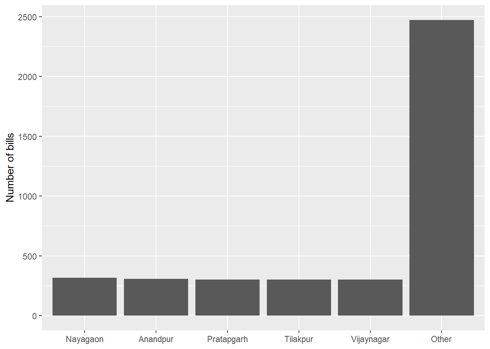
Note
The "Other" bar is the tallest here, because it joins thirteen districts. That is expected. It does not mean that “Other” is a large district. In Section 24.8 we see how to move such a bar to the end, so that it does not look like the biggest item.
24.6 Audit use case, checking heads against the approved list
Expenditure is booked under heads from an approved list. A head typed wrongly, or invented, is a data quality problem. Sometimes it is a way of hiding an expense. factor() turns any value not in its levels into NA silently, as we saw with the grades of works. fct() refuses, and tells us which values are not allowed. Both behaviours are useful. Let us take a few vouchers.
fct(vouchers$head, levels = approved_heads)Error in `fct()`:
! All values of `x` must appear in `levels` or `na`
ℹ Missing levels: "Ofice expenses", "Hospitality", and "supplies"fct() stops with an error, listing the values which are not approved. To find the vouchers concerned, we let factor() turn them into NA, and pick those rows.
# A tibble: 3 × 3
voucher_no head head_f
<chr> <chr> <fct>
1 PV-003 Ofice expenses <NA>
2 PV-005 Hospitality <NA>
3 PV-007 supplies <NA> Three vouchers have heads outside the approved list. Ofice expenses is a typing error, and supplies differs only in case. But Hospitality is a head which does not exist in the approved list at all. It needs an explanation. The auditor would ask the office under what sanction the hospitality expense was incurred, and which approved head it should have been charged to.
TipAudit tip
Do not correct the heads in the original column. Keep the auditee’s data as received, and put any corrected head in a new column. Then the list of exceptions, and how each was resolved, can go into the working papers.
24.7 Audit use case, risk ratings as an ordered factor
Audit planning often rates units as Low, Medium or High risk. These ratings have a natural order. As an ordered factor, they can be compared and filtered directly.
units <- tibble(
unit = c("Division A", "Division B", "Division C", "Division D", "Division E"),
risk = factor(c("Medium", "Low", "High", "Very high", "Low"),
levels = c("Low", "Medium", "High", "Very high"), ordered = TRUE)
)
# Units of Medium risk or above, to be covered this year
units |>
filter(risk >= "Medium") |>
arrange(desc(risk))# A tibble: 3 × 2
unit risk
<chr> <ord>
1 Division D Very high
2 Division C High
3 Division A Medium Without the ordered factor, "Medium" and "High" would be compared as text, alphabetically, and "High" would wrongly come before "Low". The list above goes straight into the annual audit plan, with the highest risk units first.
24.8 Audit use case, top vendors and the rest
Charts of expenditure by vendor usually have too many bars. A common audit chart shows the top few vendors, and puts the rest together as All others. Since we are interested in money, not in the number of payments, we lump by the amount, using the w argument (Figure 24.16). The code below creates a register of 2,000 payments to 40 vendors. Click on it to see the code.
Code to create the vendor payments
# A tibble: 6 × 2
vendor amount
<chr> <dbl>
1 Vendor 01 54101
2 Vendor 06 26379
3 Vendor 24 13117
4 Vendor 06 106366
5 Vendor 02 11108
6 Vendor 02 5917payments |>
mutate(vendor = fct_lump_n(vendor, n = 8, w = amount, other_level = "All others"),
vendor = fct_infreq(vendor, w = amount) |> fct_relevel("All others", after = Inf) |>
fct_rev()) |>
summarise(amount_lakh = sum(amount) / 1e5, .by = vendor) |>
ggplot(aes(amount_lakh, vendor)) +
geom_col(fill = "steelblue") +
labs(x = "Amount paid (Rs lakh)", y = NULL) +
theme_bw()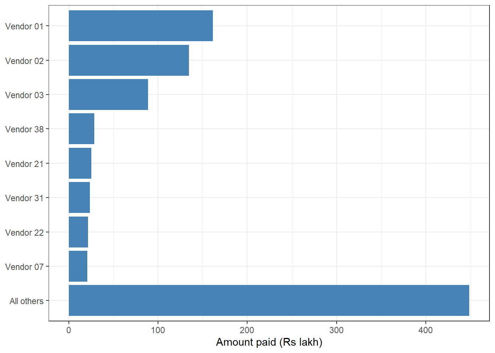
fct_lump_n() keeps the 8 vendors with the most money and lumps the rest. fct_infreq() with w = amount sorts the vendors by the amount paid. And fct_relevel(..., after = Inf) moves All others to the end, so that it does not look like the biggest vendor. Horizontal bars, with the vendor on the y-axis, keep long names readable. But ggplot2 draws the first level at the bottom of the y-axis. So we reverse the order with fct_rev(), to bring the biggest vendor to the top.
The chart shows that the three largest vendors received 40% of all the money. The next step is to see how these vendors were selected, and whether their purchases went through open tenders.
24.9 A suggested workflow
- Get the approved list. Obtain the approved list of codes from the auditee or from the rules, such as expenditure heads, vendor types or districts. Keep it as a character vector, in a meaningful order.
-
Test the codes with
fct(). Convert the column withfct(), giving the approved list aslevels. It stops with an error and names every value that is not allowed. -
Pick out the offending records. Convert the column with
factor()instead, so that unapproved values becomeNA, and filter those rows. Separate simple typing errors from heads that do not exist at all. -
Count each category. Use
fct_count()to see how many vouchers fall under each head. A head with very few or very many entries may need a closer look. -
Use ordered factors for grades and ratings. Store quality grades or risk ratings as an ordered factor, with
ordered = TRUE. A filter likerisk >= "Medium"then picks the right units, which a text comparison would not. -
Tidy the level names. Correct or combine levels with
fct_recode()andfct_collapse(), for example where the same head is spelt in two ways. -
Sort the levels by what matters. Use
fct_reorder()to sort districts by amount or median bill. The unusual district then sits at the top of the chart. -
Prepare the levels for charts. Lump the smaller vendors into All others with
fct_lump_n()andw = amount. Sort the bars withfct_infreq(), and keep All others at the end withfct_relevel().
24.10 Summary of functions used
| Function | Package | What it does |
|---|---|---|
factor(), as.factor(), levels()
|
base R | Create factors and see their levels. Values not in levels become NA
|
is.factor(), unclass()
|
base R | Check whether a vector is a factor, and see the integers underneath |
factor(ordered = TRUE), ordered(), is.ordered()
|
base R | Ordered factors, which can be compared with < and >=
|
fct() |
forcats | Create a factor, with an error for values not in levels
|
fct_count(), fct_unique()
|
forcats | Counts and unique values of a factor |
fct_reorder(), fct_reorder2()
|
forcats | Order levels by another variable |
fct_infreq(), fct_rev(), fct_relevel(), fct_inorder(), fct_inseq()
|
forcats | Order levels by frequency, reverse them, or move some by hand |
fct_relabel(), fct_recode(), fct_collapse()
|
forcats | Change or combine level names |
fct_lump_n(), fct_lump_prop(), fct_lump_min(), fct_lump_lowfreq()
|
forcats | Lump rare levels into Other |